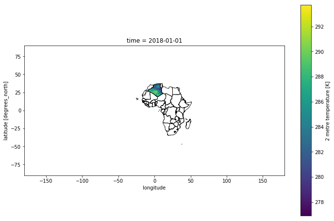

Mask countries using shapefile

Using country shapefiles to create Netcdf mask
In this tutorial, we will use shapefiles to create mask over specific countries.
In order to work with the whole globe, we will use gridded dataset ERA5 meteorological data.
I will present a simple solution based on open-source Python modules:
- xarray: for manipulating & reading gridded data, and – very important – operate out-of-memory thanks to its dask capabilities
- regionmask: to mask a gridded file according to a shapefile
- numpy: for simple array manipulations
- geopandas: to open shapefiles
- matplotlib: for plotting
1- Import librairies and create aliases.
import xarray as xr
import numpy as np
import regionmask
import geopandas as gpd
import pandas as pd
import matplotlib.pyplot as plt
import warnings; warnings.filterwarnings(action='ignore')
%matplotlib inline
Working over countries
In this example we will focus on countries in Africa. We will use shapefiles developped in ESRI format.
After downloaded the shapefile, we must load it using geopandas library:
PATH_TO_SHAPEFILE = './Countries/Africa_Countries.shp'
countries = gpd.read_file(PATH_TO_SHAPEFILE)
countries.head()
| ID | CODE | COUNTRY | geometry | |
|---|---|---|---|---|
| 0 | 1 | ALG | Algeria | POLYGON ((-5.7636199999979 25.58624999999302, … |
| 1 | 2 | ANG | Angola | POLYGON ((13.36632442474365 -8.32172966003418,… |
countries.shape[0]
762
my_list = list(countries['CODE'])
my_list_unique = set(list(countries['CODE']))
indexes = [my_list.index(x) for x in my_list_unique]
Shapes are here a GeoDataFrame containing all polygons illustrating the countries boundaries.
Now we can load the ERA5 gridded data. The parameter chunks is very important, it defines how big are the “pieces” of data moved from the disk to the memory. With this value the entire computation on a workstation with 32 GB takes a couple of minutes.
We will load all the temperature files for the year 2018 using Xarray library.
model='ERA5_T2m_1h'
t_in = 'J:/REANALYSES/ERA5/T2m_1h/'
data = t_in + model + '_2018*_sfc.nc'
ds = xr.open_mfdataset(data, chunks = {'time': 10})
ds
<xarray.Dataset>
Dimensions: (latitude: 721, longitude: 1440, time: 8760)
Coordinates:
* longitude (longitude) float32 0.0 0.25 0.5 0.75 ... 359.25 359.5 359.75
* latitude (latitude) float32 90.0 89.75 89.5 89.25 ... -89.5 -89.75 -90.0
* time (time) datetime64[ns] 2018-01-01 ... 2018-12-31T23:00:00
Data variables:
t2m (time, latitude, longitude) float32 dask.array<shape=(8760, 721, 1440), chunksize=(10, 721, 1440)>
Attributes:
Conventions: CF-1.6
history: 2019-11-11 13:33:07 GMT by grib_to_netcdf-2.14.0: /opt/ecmw...
The next function assign_coords will convert the longitude from the 0-360 range to -180,180
ds = ds.assign_coords(longitude=(((ds.longitude + 180) % 360) - 180)).sortby('longitude')
ds
<xarray.Dataset>
Dimensions: (latitude: 721, longitude: 1440, time: 8760)
Coordinates:
* longitude (longitude) float32 -180.0 -179.75 -179.5 ... 179.25 179.5 179.75
* latitude (latitude) float32 90.0 89.75 89.5 89.25 ... -89.5 -89.75 -90.0
* time (time) datetime64[ns] 2018-01-01 ... 2018-12-31T23:00:00
Data variables:
t2m (time, latitude, longitude) float32 dask.array<shape=(8760, 721, 1440), chunksize=(10, 721, 1440)>
Attributes:
Conventions: CF-1.6
history: 2019-11-11 13:33:07 GMT by grib_to_netcdf-2.14.0: /opt/ecmw...
len(list(countries.geometry.values[i] for i in indexes))
len(list(countries.COUNTRY[indexes]))
len(indexes)
52
a = range(0,countries.shape[0])
np.shape(a)
(762,)
Our xarray Dataset contains a single variable (t2m) which is stored as a dask.array. This is the result of loading files with open_mfdataset.
Now we will use regionmask module to create a gridded mask with the function regions_cls.
With this function we will create an object able to mask ERA5 gridded data.
countries_mask_poly = regionmask.Regions_cls(name = 'COUNTRY', numbers = indexes, names = countries.COUNTRY[indexes], abbrevs = countries.COUNTRY[indexes], outlines = list(countries.geometry.values[i] for i in range(0,countries.shape[0])))
countries_mask_poly
52 'COUNTRY' Regions ()
Burkina Faso Senegal Botswana Liberia Chad Equatorial Guinea Djibouti Ghana Nigeria Sao Tome and Principe Swaziland Uganda Tanzania Comoros Guinea Algeria Niger Madagascar Burundi Cameroon Mali Zimbabwe Cote d`Ivoire Tunisia Sierra Leone Libya Rwanda Benin Malawi Gabon South Africa Western Sahara Zambia Central African Republic Togo Namibia Gambia Congo-Brazzaville Democratic Republic of Congo Morocco Eritrea Cape Verde Angola Ethiopia Lesotho Egypt Guinea-Bissau Kenya Mozambique Sudan Mauritania Somalia
Now we are ready to apply the mask on the gridded dataset xarray ERA5.
We select only the first timestep to speed up the process.
This step could take few minutes because of ERA5 resolution and grid : Dimensions: (latitude: 721, longitude: 1440)
mask = countries_mask_poly.mask(ds.isel(time = 0), lat_name='latitude', lon_name='longitude')
mask
<xarray.DataArray 'region' (latitude: 721, longitude: 1440)>
array([[nan, nan, nan, ..., nan, nan, nan],
[nan, nan, nan, ..., nan, nan, nan],
[nan, nan, nan, ..., nan, nan, nan],
...,
[nan, nan, nan, ..., nan, nan, nan],
[nan, nan, nan, ..., nan, nan, nan],
[nan, nan, nan, ..., nan, nan, nan]])
Coordinates:
* latitude (latitude) float32 90.0 89.75 89.5 89.25 ... -89.5 -89.75 -90.0
* longitude (longitude) float32 -180.0 -179.75 -179.5 ... 179.25 179.5 179.75
Mask can be saved (for example as a NetCDF) for a later use.
mask.to_netcdf('./mask_Africa_by_countries.nc')
We can use Panoply free software to plot our netcdf file.
Here’s a quick visualisation using Matplotlib:
plt.figure(figsize=(16,8))
ax = plt.axes()
mask.plot(ax = ax)
countries.plot(ax = ax, alpha = 0.8, facecolor = 'none', lw = 1)
<matplotlib.axes._subplots.AxesSubplot at 0xbdf0d68>
Let’s now extract one specific country from our mask. We will for example extract informations only over Algeria. Remember, index for Algeria is: 0 .
mask_algeria = mask.where(mask == 0 )
mask_algeria.to_netcdf('./mask_Algeria.nc')
plt.figure(figsize=(16,8))
ax = plt.axes()
mask_algeria.plot(ax = ax)
countries.plot(ax = ax, alpha = 0.8, facecolor = 'none', lw = 1)
<matplotlib.axes._subplots.AxesSubplot at 0x7528278>
2- Extract time-series
We can now for each country aggregate the grid cells in the national borders. We will first develop two methods to mask our area. Then, we will extract the time series.
- Method 1:
I will focus on Algeria.
ID_COUNTRY = 0
print(countries.COUNTRY[ID_COUNTRY])
Algeria
As first step, I will save the latitude and longitude vectors because I will use it later. Then, I select the mask points where the value is equal to target value (the ID_COUNTRY code). In the numpy array sel_mask all the values are nan except for the selected ones.
lat = mask.latitude.values
lon = mask.longitude.values
sel_mask = mask.where(mask == ID_COUNTRY).values
sel_mask
array([[nan, nan, nan, ..., nan, nan, nan],
[nan, nan, nan, ..., nan, nan, nan],
[nan, nan, nan, ..., nan, nan, nan],
...,
[nan, nan, nan, ..., nan, nan, nan],
[nan, nan, nan, ..., nan, nan, nan],
[nan, nan, nan, ..., nan, nan, nan]])
To speed-up the process I want to crop the xarray Dataset selecting the smallest box containing the entire mask. To do this I store in id_lon and id_lat the coordinate points where the mask has at least a non-nan value.
id_lon = lon[np.where(~np.all(np.isnan(sel_mask), axis=0))]
id_lat = lat[np.where(~np.all(np.isnan(sel_mask), axis=1))]
id_lat
array([37. , 36.75, 36.5 , 36.25, 36. , 35.75, 35.5 , 35.25, 35. ,
34.75, 34.5 , 34.25, 34. , 33.75, 33.5 , 33.25, 33. , 32.75,
32.5 , 32.25, 32. , 31.75, 31.5 , 31.25, 31. , 30.75, 30.5 ,
30.25, 30. , 29.75, 29.5 , 29.25, 29. , 28.75, 28.5 , 28.25,
28. , 27.75, 27.5 , 27.25, 27. , 26.75, 26.5 , 26.25, 26. ,
25.75, 25.5 , 25.25, 25. , 24.75, 24.5 , 24.25, 24. , 23.75,
23.5 , 23.25, 23. , 22.75, 22.5 , 22.25, 22. , 21.75, 21.5 ,
21.25, 21. , 20.75, 20.5 , 20.25, 20. , 19.75, 19.5 , 19.25,
19. ], dtype=float32)
The Xarray dataset is reduced selecting only the target year and the coordinates containing the target region. Then the dataset is load from the dask array using compute and then filtered using the mask.
out_sel1 = ds.sel(latitude = slice(id_lat[0], id_lat[-1]), longitude = slice(id_lon[0], id_lon[-1])).compute().where(mask == ID_COUNTRY)
out_sel1
<xarray.Dataset>
Dimensions: (latitude: 73, longitude: 82, time: 8760)
Coordinates:
* latitude (latitude) float64 37.0 36.75 36.5 36.25 ... 19.5 19.25 19.0
* longitude (longitude) float64 -8.5 -8.25 -8.0 -7.75 ... 11.25 11.5 11.75
* time (time) datetime64[ns] 2018-01-01 ... 2018-12-31T23:00:00
Data variables:
t2m (time, latitude, longitude) float32 nan nan nan ... nan nan nan
Attributes:
Conventions: CF-1.6
history: 2019-11-11 13:33:07 GMT by grib_to_netcdf-2.14.0: /opt/ecmw...
- Method 2:
We can directly use xarray library to apply netcdf mask with using .where() method and DataArray mask:
out_sel2 = ds.where(mask == 0)
out_sel2
<xarray.Dataset>
Dimensions: (latitude: 721, longitude: 1440, time: 8760)
Coordinates:
* longitude (longitude) float32 -180.0 -179.75 -179.5 ... 179.25 179.5 179.75
* latitude (latitude) float32 90.0 89.75 89.5 89.25 ... -89.5 -89.75 -90.0
* time (time) datetime64[ns] 2018-01-01 ... 2018-12-31T23:00:00
Data variables:
t2m (time, latitude, longitude) float32 dask.array<shape=(8760, 721, 1440), chunksize=(10, 721, 1440)>
Attributes:
Conventions: CF-1.6
history: 2019-11-11 13:33:07 GMT by grib_to_netcdf-2.14.0: /opt/ecmw...
Quick visualisation, we will display the first step of our DataArray masked.
For out_sel2 array :
plt.figure(figsize=(12,8))
ax = plt.axes()
out_sel2.t2m.isel(time = 0).plot(ax = ax)
countries.plot(ax = ax, alpha = 0.8, facecolor = 'none')
<matplotlib.axes._subplots.AxesSubplot at 0xe73e550>

For out_sel1 array :
plt.figure(figsize=(12,8))
ax = plt.axes()
out_sel1.t2m.isel(time = 0).plot(ax = ax)
countries.plot(ax = ax, alpha = 0.8, facecolor = 'none')
<matplotlib.axes._subplots.AxesSubplot at 0xe8024a8>
Finally we can aggregate by the arithmetic mean using the groupby function to obtain a time-series of national average temperatures.
x = out_sel1.groupby('time').mean()
x
<xarray.Dataset>
Dimensions: (time: 8760)
Coordinates:
* time (time) datetime64[ns] 2018-01-01 ... 2018-12-31T23:00:00
Data variables:
t2m (time) float32 285.01346 284.65833 283.95526 ... 282.03668 281.461
Then we plot the time-series…
x.t2m.plot()
[<matplotlib.lines.Line2D at 0xe9dc518>]
- Let’s resample our dataset by day and then compute a daily mean.
x = out_sel1.resample(time = '1D').mean()-273.15
x
<xarray.Dataset>
Dimensions: (latitude: 73, longitude: 82, time: 365)
Coordinates:
* longitude (longitude) float64 -8.5 -8.25 -8.0 -7.75 ... 11.25 11.5 11.75
* latitude (latitude) float64 37.0 36.75 36.5 36.25 ... 19.5 19.25 19.0
* time (time) datetime64[ns] 2018-01-01 2018-01-02 ... 2018-12-31
Data variables:
t2m (time, latitude, longitude) float32 nan nan nan ... nan nan nan
daily_mean = x.t2m.mean(dim=('longitude','latitude'))
daily_mean
<xarray.DataArray 't2m' (time: 365)>
array([14.550091, 13.812102, 13.700798, ..., 10.975014, 11.182918, 10.956429],
dtype=float32)
Coordinates:
* time (time) datetime64[ns] 2018-01-01 2018-01-02 ... 2018-12-31
daily_mean.plot()
[<matplotlib.lines.Line2D at 0xe243f98>]
And we save it as a csv
daily_mean.to_pandas().to_csv('average-temperature-algeria.csv', header = ['t2m'])
2- Extract time-series for one specific localisation
In this example, we eant to extract time-series for Alger:
With: - longitude = 3.04 - latitude = 36.75
lati = 36.75
loni = 3.04
data = out_sel1.sel(longitude=loni , latitude=lati , method='nearest')
data.t2m
<xarray.DataArray 't2m' (time: 8760)>
array([289.91342, 289.63348, 289.2745 , ..., 285.62613, 284.9182 , 284.80624],
dtype=float32)
Coordinates:
latitude float64 36.75
longitude float64 3.0
* time (time) datetime64[ns] 2018-01-01 ... 2018-12-31T23:00:00
Attributes:
units: K
long_name: 2 metre temperature
data['t2m'] = data['t2m'] - 273.15
df = data.t2m.to_dataframe()
fig = plt.figure(figsize=(16,8))
df['t2m'].plot()
<matplotlib.axes._subplots.AxesSubplot at 0x20773fd0>
Let’s plot montlhy temperature distribution for Alger:
df['month'] = df.index.strftime("%b")
df.head()
| time | latitude | longitude | t2m | month |
|---|---|---|---|---|
| 2018-01-01 00:00:00 | 36.75 | 3 | 16.7634 | Jan |
| 2018-01-01 01:00:00 | 36.75 | 3 | 16.4835 | Jan |
| 2018-01-01 02:00:00 | 36.75 | 3 | 16.1245 | Jan |
| 2018-01-01 03:00:00 | 36.75 | 3 | 16.197 | Jan |
| 2018-01-01 04:00:00 | 36.75 | 3 | 16.0389 | Jan |
ax = plt.axes()
sns.boxplot(x="month", y="t2m", data=df, palette="Set1")
figure = ax.get_figure()
figure.set_size_inches(12, 8)
plt.show()
Guillaume Dueymes
Data Scientist and Research Assistant
My research interests include data science, data management and climate science.